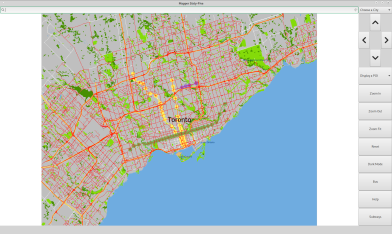

This is a mapping software that maps out different cities based on the user's request. It displays different types of roads
including motorways and trunkways, primary, secondary and tertiaty roads. The map also diaplays various features within the
city, such as golfcourses, parks, lakes, streams etc; and points of interests, such as restaurents, coffee shops, banks, etc.
The user can also query the map to search for intersections, streets and look for their Information.
Key features of the software:
The software has a drop down menu where you can select different cities and open their maps. To change cities, please click the dropdown
menu and select the desired city. This will load the map for the appropriate city without the user having to change the source code or
recompile the program.
The map also has a drop down for the points of interests in the city. The user can select a particular type of point of interest, for
example, schools, cafe or hospitals. The user can look for POI's of that specific type in their zoomed in area. For usability, the user must
zoom in at least 5 times, or for larger cities, like Tokyo, 10 times to be able to search for points of interests.
If the user is not happy with the results and want to zoom out to see another area, they can repeat the same steps for another area.
Once they have found the desired results, the user can zoom in and out and pan the map to explore each options.
The map utilizes a dark mode feature where the user can switch to dark mode which uses a darker background and high contrast colours to
help with visibility in the dark as well as at night time. All colours for streets, featurs and texts change accordingly when the user
switches between the modes.
Each city displays all the subway routes when the subway button is clicked. The different lines are differentiated using their assigned
colours as seen on the city's actual subway map. When the subway map is turned on, if the user clicks on a subway station, the software
displays the name of the subway station.
The user is able to enter names of two streets into the search bar and find the intersection between the two streets.
If there is no intersection found, then the program displays that.
INSTRUCTIONS
Here are some instructions on on how to use the software.
The program has the ability to show major and minor streets, as well as the highways. They are all categirized as
motorways, trunks, primary, secondary and tertiary streets. As you zoom in, more streets will be shown and more
details, such as the name, and the direction of one way streets will show up.
If you want to switch to another city's map, please locate the drop down menu on the top right corner and select
one of the cities from the list. Once the map is loaded, you can zoom in, pan and look around the map at different
zoom levels.
If you are looking for certain points of interests, such as, library, schools, cafe, bar or reatsurents, the software can
locate icons on on the map and display the locations of these poi's. They are also categorized, so, if you wanted to
look for only cafes or restaurents, then you can pick the type from the 2nd drop down menu.
To help with usability, you will need to zoom in at least 5 times, or for larger cities like Tokyo, zoom in at least
10 times before being able to look for the POI's. This way, we are not overwhelming you with too many options at once.
If you are not happy with the results, you can zoom out and the results will still be there and you can querry a
different area for the POI.
If you click on a particular points on the map, the software will also tell you what the closest intersection is. For
better usability, we have made it so that you need to zoom in to be able to quary this feature. If you are not on the
correct zoom level, the software will show an error message asking you to zoom in further. If you no longer want to
see the selected intersection, please click on the reset button and it will clear all the intersections for you.
The software also has a dark mode, which uses high contrast colours with dark mode. This is perfect for when you are
using this software at night and want to avoid bright lights. Simply click the dark mode button to switch between the
modes and enjoy!
If you want to see the subway stations of each of the cities, simply click on the subway button and it will show you
all the subway routes and stations in the city, with the stations marked in circles and connected by lines along the
path. If you click on the subway stations, the prohram will display the name of the subway station at the bottom
of the screen.
GO GREEN INITIATIVE

In order to help our communities go green, we have taken the initiative to help our users go green with their daily commute to work, school and more! Each time you
searches for the directions to a destination. Based on our algorithm, which looks at various factors, such as speed limit, the path to a destination and its travel time,
the software will give you the shortest and quickest path, along with a path that is the most environmentally firendly. These paths will be composed of walking, taking the
subway and the bus.